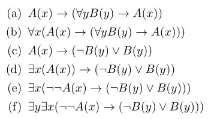

Frank Coelho de Alcantara -2020
Os quantificadores existencial e universal são muito importantes na matemática e, com ele podemos representar todas as condições envolvendo quantidades em raciocínio lógico. Contudo, existe uma representação $\exists!$ especial. Este ponto de exclamação não faz parte da linguagem da lógica predicativa, como definimos anteriormente, mas tem aplicação na prova de teoremas representando expressões: Existe um único $x$ para o qual $P(x)$ é verdadeiro. E pode ser utilizado para representar expressões diversas como:
A igualdade é um predicado, normalmente representado por $=$. Em alguns textos de lógica a igualdade faz parte da linguagem adotada. Isto é mais evidente em textos voltados para prova matemática.
Interpretamos o predicado $x=y$ de tal forma que $x$ e $y$ são variáveis que representam exatamente o mesmo elemento em um determinado domínio.
A igualdade pode ser representada por: $$\forall x \forall y (x=y\rightarrow (P(x)\leftrightarrow P(y)))$$
De onde é possível afirmar: $x=y, P(x) \vdash P(y)$ para todo e qualquer predicado $P$.
Considere que as variáveis $x$ e $y$ existem no domínio dos números reais e que $$\forall x \forall y(x + y = y + x)$$
Neste caso estamos dizendo que para quaisquer números reais $x$ e $y$ $x+y=y+x$ que vem a ser a definição da propriedade comutativa da adição no domínio dos números reais. Considere: $$\forall x \exists y (x + y = 0)$$
Neste caso, estamos dizendo que, nos números reais, para qualquer $x$ existe um $y$ que é o seu inverso aditivo.
Por fim, considere: $$\forall x \forall y \forall z(x + (y + z) = (x + y) + z)$$
No domínio dos números reais, traduza para linguagem natural: $$\forall x\forall y((x > 0) \wedge (y < 0) → (xy < 0))$$
Para todos os números reais $x$ e para todos os números reais $y$, se $x$ é maior que 0 e $y$ é menor que 0 então o produto entre $x$ e $y$ será menor que zero. Ou, simplificando: no domínio dos reais qualquer produto entre um número negativo e e um número positivo resultará em um número real negativo.
Se a interpretação dos quantificadores estiver difícil, podemos simplificar pensando em forma de laços. Isto é uma metáfora, mas ajuda.
Para verificar se $\forall x \forall yP(x, y)$ é verdadeiro, vamos imaginar dois laços aninhados. No primeiro vemos a primeira instância de $x$ e para esta instância corremos o outro laço para todas as instâncias de $y$. Quando avaliarmos todos os $y$, passamos para o próximo $x$ e voltamos a analisar todos os $y$. Se existir um único par $x$ e $y$ onde $P(x,y)$ seja falso então $\forall x \forall yP(x, y)$ é falso.
Igualmente, para verificar se $\forall x \exists yP(x, y)$ repetimos o mesmo laço até encontrar um par $x$, $y$ onde $P(x,y)$ seja verdadeiro. Se não encontrarmos nenhum destes pares então $\forall x \exists yP(x, y)$ é falso.
Descreva, com as suas palavras, no seu caderno, o procedimento mental (laço) que devemos utilizar para encontrar a verdade de:
Resposta 1: fazemos o laço por todos os valores de $x$ e para cada $x$ percorremos todos os valores de $y$ para verificar se existe um valor de $x$ para o qual, em todos os valores de $y$, $P(x,y)$ é verdadeiro, se sim, $\exists x \forall yP(x, y)$ é verdadeiro e paramos no primeiro $x$ que satisfaça esta condição. Caso contrário $\exists x \forall yP(x, y)$ é falso.
Resposta 2: fazemos o laço por todos os valores de $x$ e para cada $x$ verificamos todos os valores de $y$ até encontrar uma combinação de $x$ e $y$ onde $P(x,y)$ seja verdadeiro. Neste caso $\exists x \exists yP(x, y)$ será verdadeiro. Caso nunca encontremos um par $x$ e $y$ onde $P(x,y)$ seja verdadeiro então $\exists x \exists yP(x, y)$ será falso.
Considere o modelo $M$ onde o universo é o conjunto dos números reais e os predicados $MD$ representando "é múltiplo de dez" e $IP$ representando "é par". Traduza para a linguagem natural as sentenças a seguir e indique sua veracidade ou não.
Considere o modelo $M$ onde o universo é o conjunto dos números reais e os predicados $MD$ representando "é múltiplo de dez" e $IP$ representando "é par". Traduza para a linguagem natural as sentenças a seguir e indique sua veracidade ou não.
Considere a expressão: $$\forall xP(x) \vee \neg \forall xP(x)$$
Podemos afirmar que esta expressão é verdadeira para qualquer modelo, qualquer predicado e qualquer instância.
Um dos lados da disjunção sempre será verdadeiro.
Dizemos que uma expressão é válida se esta expressão for verdadeira em todo, e qualquer modelo.
Dizemos que uma expressão é contraditória se esta expressão for falsa em todo, e qualquer modelo.
A validade no cálculo de predicados tem a mesma aplicação da tautologia no cálculo proposicional.
Contudo há uma diferença importante.
Para dizer que uma fórmula proposicional é tautológica basta encontrar a tabela verdade desta fórmula.
Para dizer que uma expressão predicativa é válida, temos que avaliar esta expressão em todos os modelos independente do universo ou do predicado e para todas as interpretações possíveis.
Isso parece um tanto quanto difícil!.
Considere as seguintes expressões e determine se são válidas ou contraditórias e justifique, usando a linguagem natural, sua definição.
Dizemos que a expressão $P$ implica em $Q$ se e somente se a expressão $P\rightarrow Q$ for válida.
Dizemos que a expressão $P$ é equivalente em $Q$ se e somente se a expressão $P\leftrightarrow Q$ for válida.
Suponha que $P$ implica em $Q$ e que $Q$ implica em $P$. Então $P\rightarrow Q$ e $Q \rightarrow P$ são válidas. E isto será verdade para qualquer modelo, predicado, ou variável das expressões $P$ e $Q$.
Parece que melhorou um pouco!
Para mostrar que uma expressão não é logicamente válida basta provar que existe uma, e somente uma, combinação de universo, instância e predicado, para aquelas expressões na qual elas não são válidas.
Basta encontrar um modelo onde as expressões não são equivalentes.
Mostre que $\forall x(P(x)\vee Q(x))$ não é válida. Escreva no seu caderno
Para tanto, precisamos encontrar um modelo onde $\forall x(P(x)\vee Q(x))$ não seja verdade. Considere o universo dos números naturais. Considere $P(x)$ como "$x$ é impar" e $Q(x)$ como "$x$ é múltiplo de 10". Neste modelo, $\forall x(P(x)\vee Q(x))$, significa: todos os números naturais são ímpares ou múltiplos de 10. Logo, neste modelo $\forall x(P(x)\vee Q(x))$ é falsa e, consequentemente, não válida.
Dizemos que uma expressão é uma instância tautológica se ela for o resultado da substituição uniform das proposições, em uma formula bem formada de uma tautologia, por expressões do cálculo de predicados.
Determinar que uma expressão é ou não uma instância tautológica depende apenas da sintaxe da expressão. Ignoramos o modelo.
No cálculo proposicional a fórmula bem formada $p \rightarrow p$ é uma tautologia. Então, qualquer expressão do cálculo de predicados neste padrão será uma instância tautológica.
Qualquer instância tautológica é uma expressão válida!
São instâncias tautológicas:
Baseadas em $p \rightarrow p$: $$P(x) \rightarrow P(x)$$ e $$\forall x \exists yQ(x,y) \rightarrow \forall x \exists yQ(x,y)$$
Baseadas em $p \rightarrow (q \rightarrow p)$: $$\forall x \exists yQ(x,y) \rightarrow(\exists xP(x) \rightarrow \forall x \exists yQ(x,y) \rightarrow )$$
Observe que $P(x) \rightarrow P(x)$ é uma instância tautológica e possui uma variável livre (variáveis que não estão no escopo de um quantificador).
Se $P(x) \rightarrow P(x)$ é válida, tem que ser válida em qualquer modelo. Logo $\forall x(P(x) \rightarrow P(x))$ é válido.
$\forall x(P(x) \rightarrow P(x))$ é válida!
Assim se $P(x)$ representa uma expressão válida, $\forall xP(x)$,$\forall xP(x)$, $\forall x\forall yP(x)$ também serão válidas.
$P(x) \rightarrow P(x)$ é uma instância tautológica. $\forall x(P(x) \rightarrow P(x))$ não é instância tautológica, mas ambas são expressões válidas.
Toda instância tautológica é válida.
Todas as expressões construídas com quantificadores na frente de uma expressão é válida.
Existem expressões válidas que não são instâncias tautológicas.
Assim se $P(x)$ representa uma expressão válida, $\forall xP(x)$,$\forall xP(x)$, $\forall x\forall yP(x)$ também serão válidas.
$P(x) \rightarrow P(x)$ é uma instância tautológica. $\forall x(P(x) \rightarrow P(x))$ não é instância tautológica, mas ambas são expressões válidas.
Na figura a seguir existe um conjunto de expressões válidas identifique aquelas que são instâncias tautológicas e justifique.
Os quantificadores são duais: $$\forall xP(x) \Leftrightarrow \neg \exists x \neg P(x)$$ $$\exists xP(x) \Leftrightarrow \neg \forall x \neg P(x)$$
Em alguns trabalhos o alfabeto adotado para a linguagem da lógica de predicados não contem o símbolo $\exists$ é usado apenas $\neg \forall \neg$ em seu lugar.
Quantificadores do mesmo tipo são comutáveis: $$\forall x \forall yP(x,y) \Leftrightarrow \forall y \forall xP(x,y)$$ $$\exists x \exists yP(x,y) \Leftrightarrow \exists y \exists xP(x,y)$$
Quantificadores diferentes comutam em apenas uma direção:$$\exists x \forall yP(x,y) \Rightarrow \forall y \exists xP(x,y) $$
Quantificadores universais são completamente distributivos sobre a conjunção: $$\forall x(P(x) \wedge Q(x)) \Leftrightarrow \forall xP(x) \wedge \forall xQ(x)$$
Quantificadores universais são distributivos sobre a disjunção em uma direção: $$\forall xP(x) \vee \forall xQ(x) \Rightarrow \forall x(O(x) \vee Q(x))$$
Quantificadores existenciais são completamente distributivos sobre a disjunção::$$\exists x(P(x) \vee Q(x)) \Leftrightarrow \exists xP(x) \vee \exists xQ(x)$$
Quantificadores existenciais são distributivos sobre a conjunção em uma direção: $$\exists x(P(x) \wedge Q(x)) \Rightarrow \exists xP(x) \wedge \exists xQ(x)$$
A aplicação de quantificadores a conjunção ou disjunção em expressões que contém variáveis livres permitem a distribuição completa.
| $$\exists xP(x) \vee Q \Leftrightarrow \exists x(P(x) \vee Q)$$ | $$\forall xP(x) \vee Q \Leftrightarrow \forall x(P(x) \vee Q)$$ |
| $$Q \vee \exists xP(x) \Leftrightarrow \exists x(Q \vee P(x))$$ | $$Q \vee \forall xP(x) \Leftrightarrow \forall x(Q \vee P(x))$$ |
| $$\exists xP(x) \wedge Q \Leftrightarrow \exists x(P(x) \wedge Q)$$ | $$\forall xP(x) \wedge Q \Leftrightarrow \forall x(P(x) \wedge Q)$$ |
| $$Q \wedge \exists xP(x) \Leftrightarrow \exists x(Q \wedge P(x))$$ | $$Q \wedge \forall xP(x) \Leftrightarrow \forall x(Q \wedge P(x))$$ |
O quantificador universal é distributivo sobre a bicondicional em uma direção: $$\forall x(P(x) \leftrightarrow Q(x)) \Rightarrow (\forall x P(x) \leftrightarrow \forall x Q(x))$$
Se um dos operadores for uma variável livre então: $$ \forall x(P(x) \rightarrow Q) \Leftrightarrow (\exists x P(x) \rightarrow Q)$$ $$ \forall x(Q \rightarrow P(x)) \Leftrightarrow (Q \rightarrow \forall x P(x))$$
Para o quantificador existencial temos: $$ \forall x(P(x) \leftrightarrow Q(x)) \Rightarrow (\exists xP(x) \leftrightarrow \exists xQ(x))$$
As seguintes expressões são verdadeiras:
| $$\exists x(P(x) \rightarrow Q(x)) \Leftrightarrow (\forall xP(x) \rightarrow \exists xQ(x))$$ | $$(\exists xP(x) \rightarrow \forall xQ(x)) \Rightarrow \forall x(P(x) \rightarrow Q(x))$$ |
| $$\forall x(P(x) \rightarrow Q(x)) \Rightarrow (\exists xP(x) \rightarrow \exists xQ(x))$$ | $$\forall x(P(x) \rightarrow Q(x)) \Rightarrow (\forall xP(x) \rightarrow \exists xQ(x))$$ |
Já podemos fazer derivações de expressões predicativas:
| $\exists x(P(x) \rightarrow Q(x))$ | $\equiv \exists x(\neg P(x) \vee Q(x))$ |
| $\equiv \exists x \neg P(x) \vee \exists xQ(x)$ | |
| $\equiv \neg \exists x \neg P(x) \rightarrow \exists xQ(x)$ | |
| $\equiv \forall xP(x) \rightarrow \exists xQ(x)$ |
Consultando suas anotações e os slides das aulas, justifique, no seu caderno, cada uma destas passagens.
Esta questão vale dois pontos na prova do segundo bimestre:
A seguinte história foi retirada do livro de Wirth (1976) Algorithms + data structures = programs:
Eu casei com uma viúva, vamos chamá-la de W, que tem uma filha adulta, que chamaremos de D. Meu pai (P), que nos visita com frequência, se apaixonou por minha filha adotiva e casou com ela. Desta forma, meu pai se tornou meu genro e minha filha adotiva se transformou na minha madastra. Alguns meses mais tarde minha esposa deu a luz a um menino, meu filho (F), o qual é cunhado do meu pai e meu tio. A esposa do meu pai, que é minha filha adotiva, também teve um filho (F2).
Use o cálculo de predicados para criar um conjunto de expressões para representar a situação descrita por Wirth, expressões que definam os relacionamentos familiares descritos e prove que eu sou meu próprio neto. Valendo 1 ponto na prova do segundo bimestre.
Implemente todo este problema em Prolog e encontre quem é meu neto.